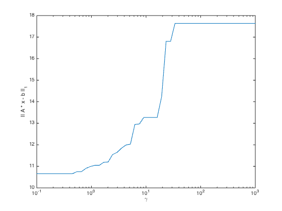
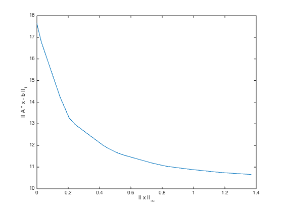

% This script solves a family of problems of the form % minimize || A*x-b ||_1 + gamma * || x ||_Inf % for varying values of gamma. For gamma = 0, this is simply an % unconstrained norm minimization; for gamma = Inf, x = 0 and % || A x - b || = || b || are optimal. Varying gamma allows us % to genreate a tradeoff curve between these extremes. n = 10; A = randn(2*n,n); b = randn(2*n,1); gamma = logspace( -1, 3 ); nrms = zeros( size( gamma ) ); xnrms = zeros( size( gamma ) ); fprintf( 1, 'Gamma: ' ); for k = 1 : length( gamma ), if k > 1 && rem( k, 10 ) == 1, fprintf( 1, '\n ' ); end fprintf( 1, '%g ', gamma( k ) ); cvx_begin quiet variable x(n) minimize( norm( A * x - b, 1 ) + gamma( k ) * norm( x, Inf ) ) cvx_end nrms( k ) = norm( A * x - b, 1 ); xnrms( k ) = norm( x, Inf ); end fprintf( 1, 'done.\n' ); figure semilogx( gamma, nrms ); xlabel( '\gamma' ); ylabel( '|| A * x - b ||_1' ); figure plot( xnrms, nrms ); xlabel( '|| x ||_{\infty}' ); ylabel( '|| A * x - b ||_1' );
Gamma: 0.1 0.120679 0.145635 0.175751 0.212095 0.255955 0.308884 0.372759 0.449843 0.542868
0.655129 0.790604 0.954095 1.1514 1.3895 1.67683 2.02359 2.44205 2.94705 3.55648
4.29193 5.17947 6.25055 7.54312 9.10298 10.9854 13.2571 15.9986 19.307 23.2995
28.1177 33.9322 40.9492 49.4171 59.6362 71.9686 86.8511 104.811 126.486 152.642
184.207 222.3 268.27 323.746 390.694 471.487 568.987 686.649 828.643 1000 done.
 